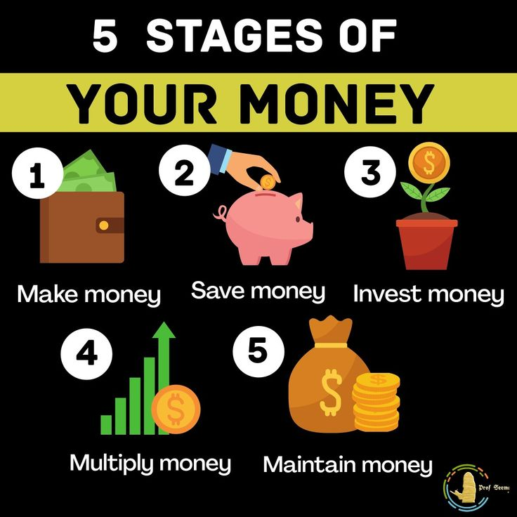

Money is any item or verifiable record that is generally accepted as payment for goods and services and the repayment of debts. It overcomes the limitations of bartering by serving as a standardized medium of exchange, a unit of account, and a store of value.
1. make money with content, choose a format and platform that fits your skills. You can sell digital products (e-books, templates), monetize videos and blogs with ads or affiliate links, or offer freelance services like video editing and writing
2.Saving money is easiest when you automate and optimize. Start by setting up a direct deposit into a dedicated savings account, track your expenses, and cancel unused subscriptions. Implement the 30-day rule to stop impulse purchases, and prioritize paying off high-interest debt
3.Investing money means deploying capital today to build wealth over time, helping your finances outpace inflation. Beginners should focus on asset allocation, diversification, and regular investing through tools like Systematic Investment Plans (SIPs)
4.Multiplying money means growing your wealth through compounding, investing, and asset acquisition. It is about shifting from simply earning income to having your money work for you via strategic financial management.
5.Maintaining money effectively requires building a realistic budget, treating savings as a non-negotiable expense, and aggressively managing debt. By living below your means, prioritizing an emergency fund, and automating your finances, you can stop stressing over finances and start building long-term wealth.
